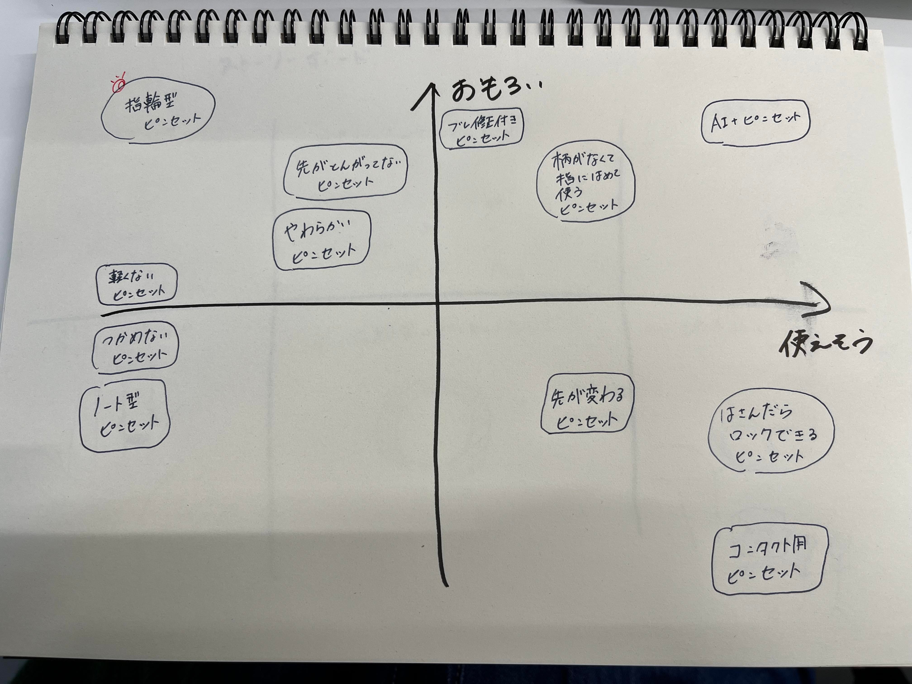
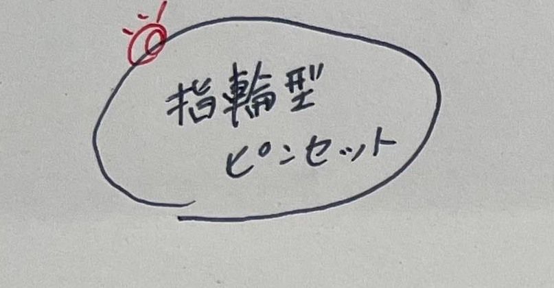
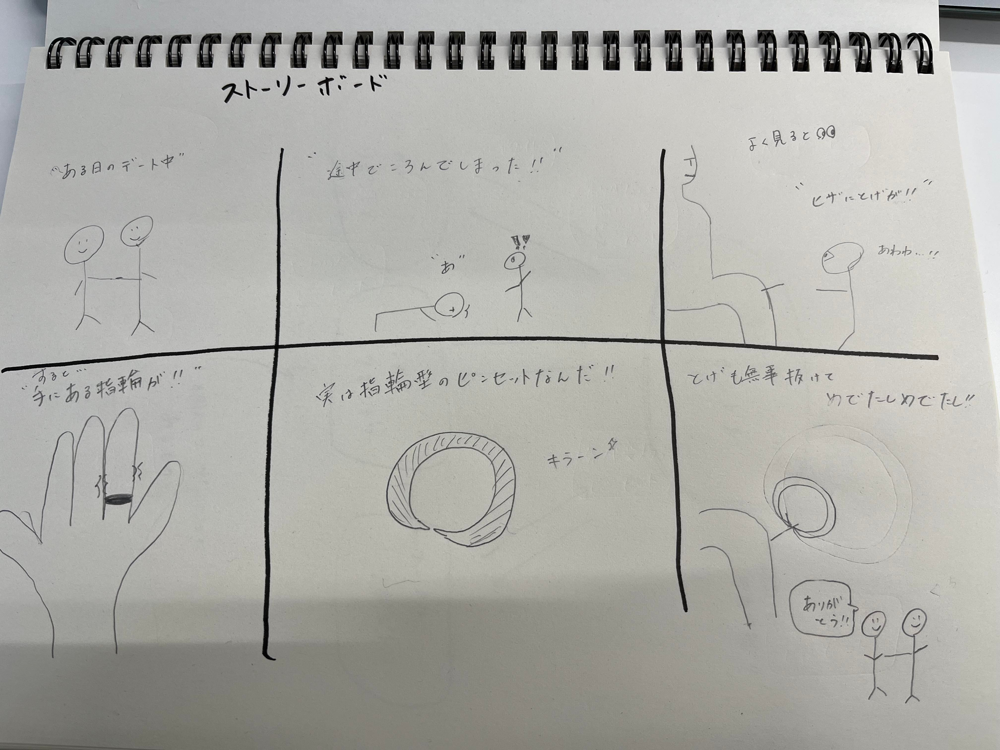
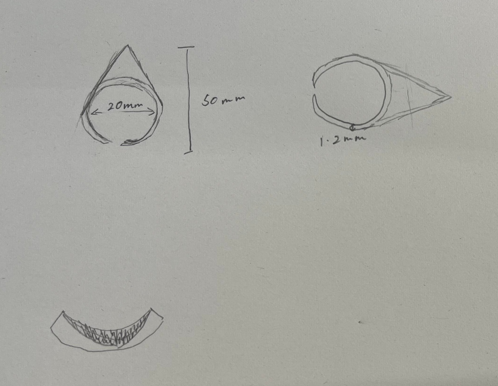
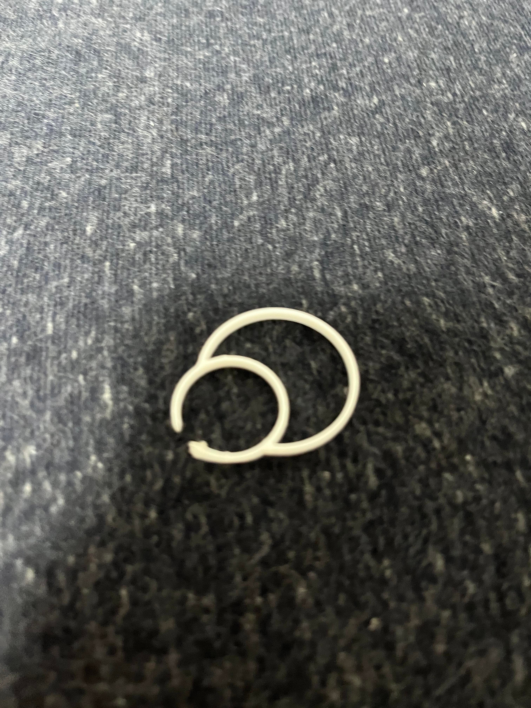
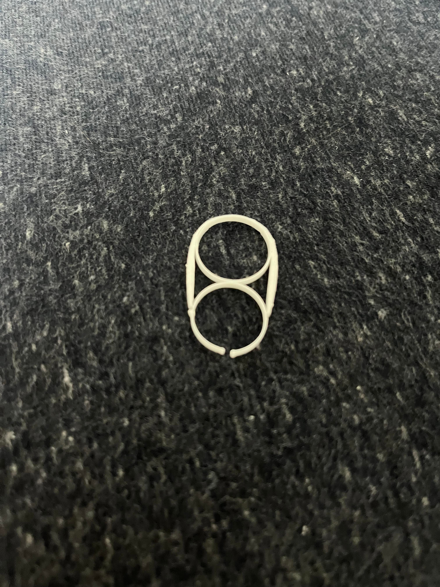
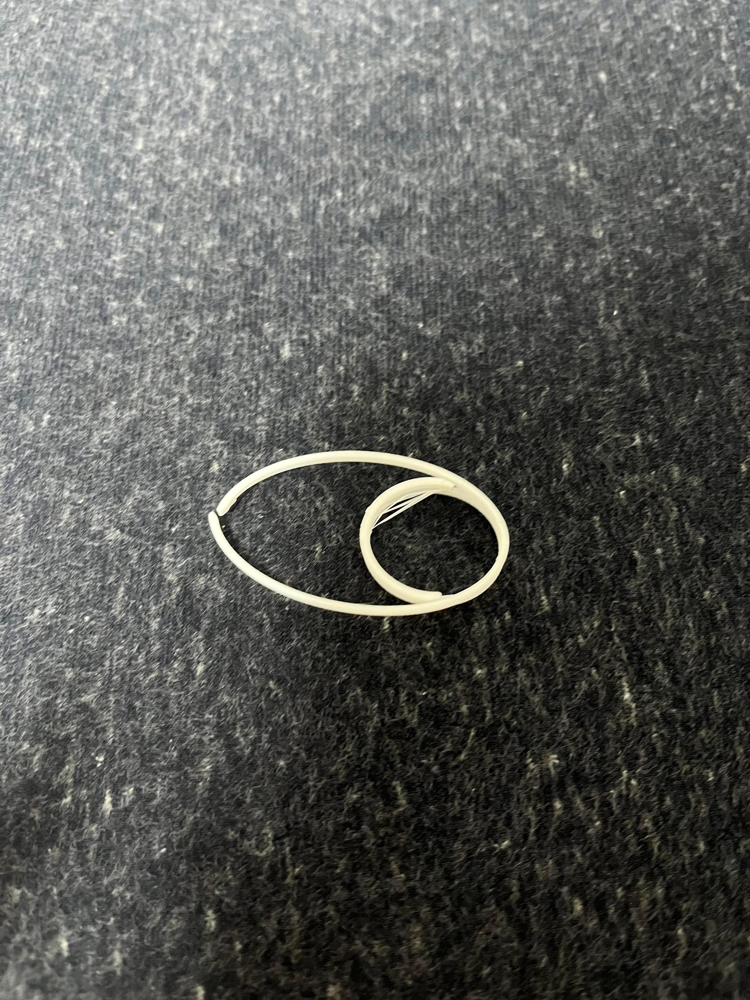
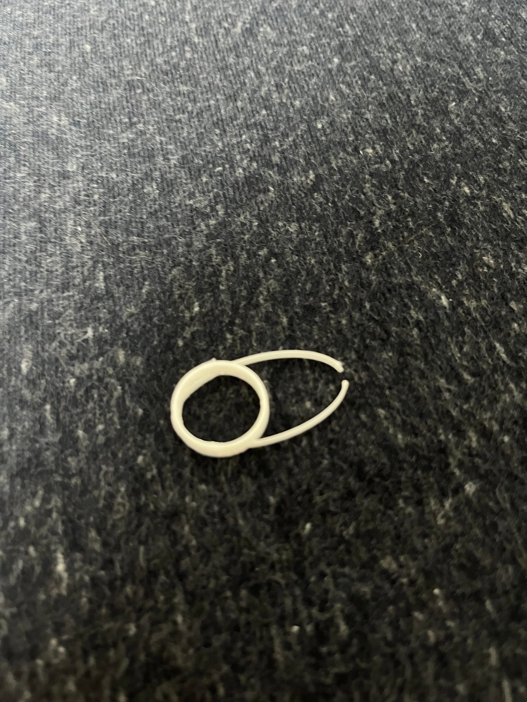
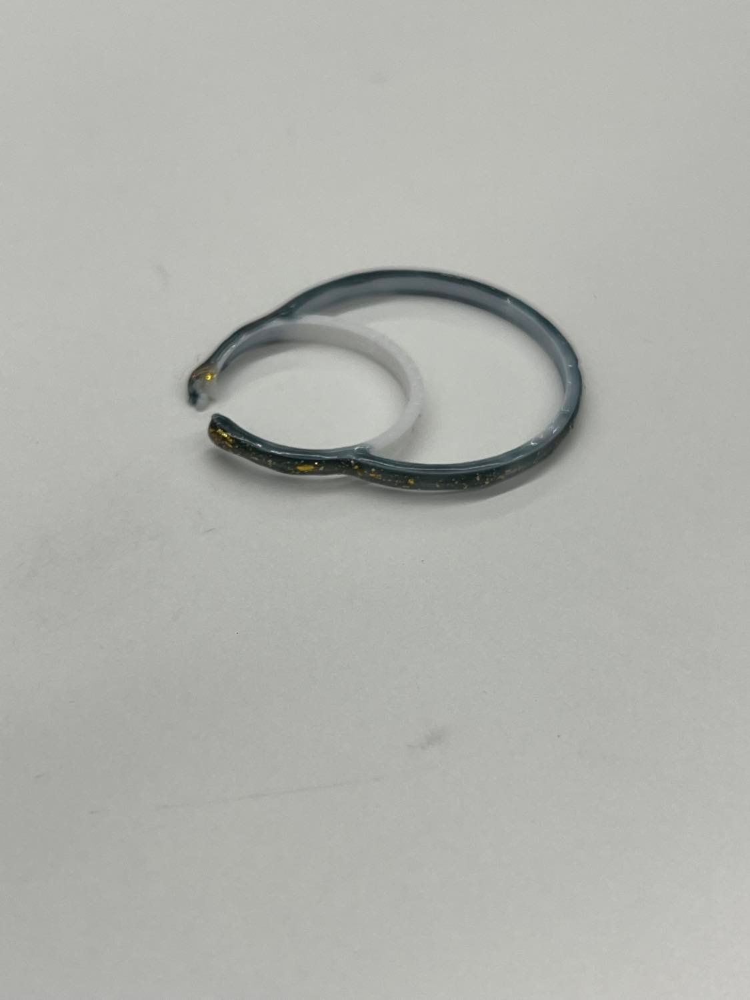
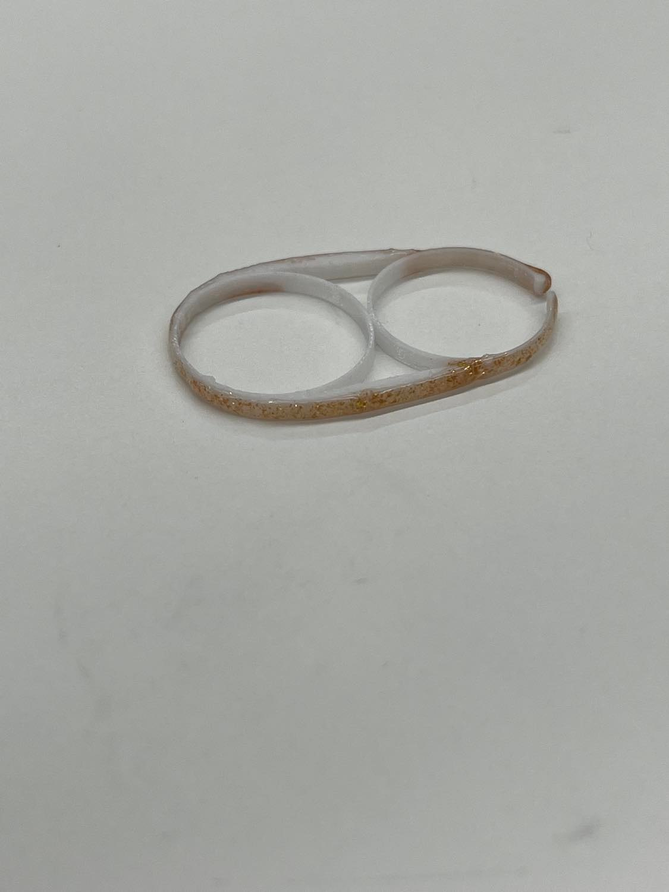

ピンセット
指輪をピンセットに
グループ内で出た意見を自分なりにピックアップしたところ
実用性には欠けるがおもろいメーターが自分の中でMAXだった
こちらを作ってみることにした
自分自身リング系のアクセサリーが好きだったということも
作る動機になった


そして、それに合わせて考えたストーリーボードがこちら

そして、実際に一つ目をスケッチしてみた

これをもとにfusion360で1つ目を製作してみた

ここまで作って、たまたま2本指リングのような形になったと思った
そして、2本指リングをネットで検索してみた


そうそう！これこれ〜！！
私がイメージしていたのはまさにこんなの！！
ということで、早速第2弾の制作に取り掛かった
2個目からは、2本指リングの形に寄せていくことを目標として製作した
そして、出来上がったのがこちら








うん。かわいい。
実際の2本指リングのようにはなかなかスケッチが出来なかったけれど
かわいい。もうちょっと可愛くしたい
ということで、中でもお気に入りな2つにジェルネイルで色をつけてみた


そして、実際に指につけてみた
うん。めっちゃくちゃかわいい！！！
（お見苦しい指が通ります…）


今回この制作にあたり、楕円形からピンセットの掴む部分を
切り抜くことが一番難しかった
知り合いにfusionを使える人がいたので、その人に聞きながら
製作したが、その際に一番言われたことは
「拘束をかけよう」
ということだった。
今回の製作にあたり、fusionにおいての拘束の仕方を一番練習した
その際参考にした動画がこちら
超入門Fusion360 #4】なんとなく使ってる？！１２の拘束を練習しよう
今回の制作でできることが少し増えたが、
最終的に自分がやりたかった2本指リングの形にまでは辿り着かなかったので
またfusionを使って色々とできるようになりたいと感じている！！
しかし、この課題はめっちゃくちゃ楽しかった！！